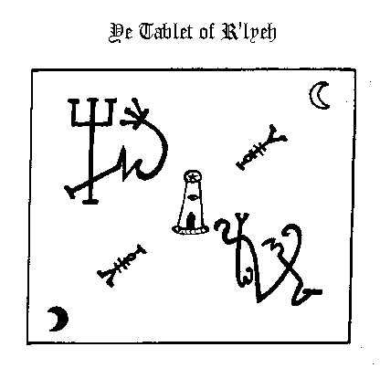

Beneath the oceans They brooded while ages past, till seas gave up the land, whereupon They swarmed forth in Their multitudes and darkness ruled the Earth.
At the frozen Poles They raised mighty cities, and upon high places the temples of Those whome nature owns not and the Gods have cursed.
And the spawn of the Old Ones covered the Earth, and Their children endureth throughout the ages. Ye shantaks of Leng are the work of Their hands, the Ghasts who dwelleth in Zin's primordial vaults know Them as their Lords. They have fathered the Na-Hag and the Gaunts that ride the Night; Great Cthulhuis Their brother, the shaggoths Their slaves. The Dholes do homage unto Them in the nighted vale of Pnoth and Gugs sing Their praises beneath the peaks of ancient Throk.
They have walked amidst the stars and They have walked the Earth. The City of Irem in the great desert has known Them; Leng in the Cold Waste has seen Their passing, the timeless citadel upon the cloud-vieled heights of unknown Kadath beareth Their mark.
Wantonly the Old Ones trod the ways of darkness and Their blasphemies were great upon the Earth; all creation bowed beneath Their might and knew Them for Their wickedness.
And the Elder Lords opened Their eyes and beheld the abominations of Those that ravaged the Earth. In Their wrath They set their hand against the Old Ones, staying Them in the midst of Their iniquity and casting Them forth from the Earth to the Void beyond the planes where chaos reigns and form abideth not. And the Elder Lords set Their seal upon the Gateway and the power of the Old Ones prevailest not against its might.
Loathsome Cthulhu rose then from the deeps and raged with exceeding great fury against the Earth Guardians. And They bound his venomous claws with potent spells and sealed him up within the City of R'lyeh wherein beneath the waves he shall sleep death's dream until the end of the Aeon.
Beyond the Gate dwell now the Old Ones; not in the spaces known unto men but in the angles betwixt them. Outside Earth's plane They linger and ever awaite the time of Their return; for the Earth has known Them and shall know Them in time yet to come.
And the Old Ones hold foul and formless Azathoth for Their Master abd Abide with Him in the black cavern at the centre of all infinity, where he gnaws ravenously in ultimate chaos amid the mad beating of hidden drums, the tuneless piping of hideous flutes and the ceaseless bellowing of blind idiot gods that shamble and gesture aimlessly for ever.
The soul of Azathoth dwelleth in Yog-sothoth and He shall beckon unto the Old Ones when the stars mark the time of Their coming; for Yog-sothoth is the Gate through which Those of the Void will re-enter. Yog-sothoth knowest the mazes of of time, for all time is one unto Him. He knowest where the Old Ones came forth in time along long past and where They shall come forth again when the cycle returneth.
After day cometh night; man's day shall pass, and They shall
rule where They once ruled. As foulness you shall know them and Their
accursedness shall stain the Earth.
Thou must observe the cycle of the Moon, the movements of the planets, the Sun's course through the Zodiac and the rising of the constellations.
Ye Ultimate Rites shall be performed only in the seasons proper to them, these be: at Candlemas (on the second day of the second month), at Beltane (on the Eve of May), at Lammas (on the first day of the eighth month), at Roodmas (on the fourteenth day of the ninth month), and at Hallowmas (on November Eve).
Call out to dread Azathoth when the Sun is in the sign of the Ram, the Lion, or the Archer; the Moon decreasing and Mars and Saturn conjoin.
Mighty Yog-sothoth shall rise to ye incantations when Sol has entered the fiery house of Leo and the hour of Lammas be upon ye.
Evoke ye terrible Hastur on Candlemas Night, when Sol is in Aquarius and Mercury in trine.
Supplicate Great Cthulhu only at Hallowmas Eve when the Sun abides within the House of the Scorpion and Orion riseth. When All Hallows falls within the cycle of the new Moon the power shall be the strongest.
Conjure Shub-Niggurath when the Beltane fires glow upon the
hills and the Sun is in the Second House, repeating the Rites of Roodmas when ye
Black One appeareth.
First thou shalt raise up ye four cardinal stones and these shall mark ye direction of ye four winds as they howleth through their seasons.
To ye North set ye the stone of Great Coldness that shall form ye Gate of ye winter-wind engraving thereupon the sigil of the Earth-Bull thus:{Taurus sigil}
In ye South (at a space of five paces from ye stone of ye North), thou shalt raise a stone of fierce-heat, through which ye summer winds bloweth and make upon ye stone ye mark of ye Lion-serpent thus:{Leo Sigil}
Ye stone of whirling-air shall be set in ye East where ye first equinox riseth and shall be graven with ye sign of he that beareth ye waters, thus:{Aquarius Sigil}
Ye Gate of Rushing Torrents thou cause to beat the west most inner point (at a space of five paces from ye stone of ye East) where ye sun dieth in ye evening and ye cycle of night returns. Blazon ye stone with ye character of ye Scorpion whose tail reacheth unto the stars:{Scorpio Sigil}
Set thou the seven stones of Those that wander ye heavens, without ye inner four and through their diverse influences shall ye focus of power be established.
In ye North beyond the stone of Great Coldness set ye first ye stone of Saturn at a space of three paces. This being done proceed thou widdershins placing at like distances apart ye stones of Jupiter, Mercury, Mars, Venus, Sul and Luna marking each with their rightful sign.
At ye center of the so completed configuration set ye the Alter of ye Great Old Ones and seal it with ye symbol of Yog-Sothoth and ye mighty Names of Azathoth, Cthulhu, Hastur, Shub-Niggurath and Nyarlathotep.
And ye stones shall be ye Gates through which thou shalt call Them forth from Outside man's time and space.
Entreat ye of ye stones by night and when the Moon decreasetth in her light, turning thy face to ye direction of Their coming, speaking ye words and making ye gestures that bringeth forth ye Old Ones and causeth Them to walk once more ye Earth.
Ye first sign is that of Voor and in nature it be ye true symbol of ye Old Ones. Make ye thus whenever thou wouldst supplicate Those that ever waite beyond the Threshold.
Ye second sign is that of Kish and it breaketh down all barriers and openeth ye portals of ye Ultimate Planes.
In ye third place goeth ye Great Sign of Koth which sealeth ye Gates and guardeth ye pathways.
Ye forth sign is that of ye Elder Gods. It protecteth those who would evoke ye powers by night, and banish ye forces of menace and antagonism.
(Nota: Ye Elder Sign hath yet another form and when so enscribed upon ye grey stone of Mnar it serveth to hold back ye power of Ye Great Old Ones for all time.)
Place the so assembled elements in a vessel of green glass and seal with a brazen stopper afore inscribed with the characters of Mars and Saturn.
Elevate the vessel to the Four Winds and cry aloud the supreme words of power thus:
To the North: ZIJMUORSOBET, NOIJM, ZAVAXO!
To the East: QUEHAIJ, ABAWO, NOQUETONAIJI!
To the South: OASAIJ, WURAM, THEFOTOSON!
To the West: ZIJORONAIFWETHO, MUGELTHOR, MUGELTHOR-YZXE!
Cover the vessel with a cloth of black velvet and set aside.
For each of seven nights thou shalt bathe the vessel in Moonlight for the space of one hour - keeping it concealed beneath the cloth from cock-crow till sunset.
All this being accomplished the incense shall be ready for use and possessed of such vertue that he that useth it with knowledge shall have power to call forth and command the Infernal Legions.
Nota: When employed in ye Ultimate Rites the incense may be rendered more efficacious by the addition of one part powdered mummy-Egypticus.
Employ the perfume of Zkauba in all ceremonies of ye ancient Lore casting ye essences upon live coals of Yew or Oak. And when ye spirits drawn near, the vaporous smoke shall enchant and fascinate them, binding their powers to thy will.
{Editor's Note: In the published edition a series of planetary glyphs and sigils are shown in reference to the above formula. These have been omitted as they are not illustrated in the original manuscript but were provided from other unrelated texts by the publishers.}
Take ye dust of ye tomb - wherein ye body has lain for two hundred years or more past -, three parts. Take of powdered Amaranth, two parts; of ground Ivy leaf, one part, and of fine salt, one part.
Compound all together in an open mortar in the day and hour of Saturn.
Make over the thus assembled ingredients the Voorish sign, and then seal up the powder within a leaden casket whereupon is graven the sigil of Koth.
YE USING OF YE POWDER:
Whenever thou wisheth to observe the airial manifestations of the spirits blow a pinch of ye powder in the irection of their coming, either from the palm of thy hand or the blade of the Magic Bolyne.
Mark ye well that ye maketh ye Elder Sign at their appearence, lest the tendrils of darkness enter thy soul.
When ye Moon increaseth in her light place in an earthen crucible a goodly quantity of oil of ye Lotus, sprinkle with one once powdered mandragora and stir well with ye forked twig of ye wild thorn bush. Having so done utter ye incantation of Yebsu (taken fron diverse lines in ye papyrus) thus:
Add to ye potion pinch of red earth, nine drops natron, for drops balsam of Olibanum and one drop blood (from thy right hand). Combine the whole with a like measure of fat of the gosling and place ye vessel upon ye fire. When all is rendered well and ye dark vapours begin to rise, make ye the Elder Sign and remove from ye flames.
When the unguent has cooled place it within an urn of ye finest alabaster, which thou shalt keep in some secret place (known only to thyself) until thou shalt have need of it.
Upon one side of the the blade thou shalt enscribe these characters:
{Editor's Note: These graphics are not shown in the Manuscript}
And upon the other side these:
{Editor's Note: These graphics are not shown in the Manuscript}
On the day and hour of Saturn the moon decreasing, light thou a fire of Laurel and yew boughs and offering the blade to the flames pronounce the five-fold conjuration thus:
HCORIAXOJU, ZODCARNES, I powerfully call upon ye and stir ye up O ye mighty spirits that dwelleth in the Great Abyss.
In the dread and potent name of AZATHOTH come ye forth and give power unto this blade fashioned in accordance to ancient Lore.
By XENTHONO-ROHMATRU, I command you O AZIABELIS, by YSEHYROROSETH , I call the O ANTIQUELIS, and in the Vast and Terrible Name of DAMAMIACH that Crom-yha uttered and the mountains shook I mightily compel ye forth O BARBUELIS, attend me! aid me! give power unto my spell that this weapon that bearest the runes of fire recieveth such vertue that it shall strike fear into the hearts of all spirits that would disobey my commands, and that it shall assist me to form all manner of Circles, figures and mystic sigils necessary in the operations of Magickal Art.
In the Name of Great and Mighty YOG-SOTHOTH and in the invincible sign of Voor (give sign)
Give power!
Give power!
Give power!
When the flames turn blue it shall be a sure sign that the spirits obey your demands whereupon thou shalt quench the blade in an afore prepared mixture of brine and cock-gall.
Burn the incense of Zkauba as an offering to the spirits thou hast called forth, then dismiss them to their abodes with these words:
In the Names of AZATHOTH and YOG-SOTHOTH, Their servant NYARLATHOTEP and by the power of this sign (make ye the Elder Sign), I discharge thee; go forth from this place in peace and return ye not until I calleth thee. (Seal ye portals with the sign of Koth).
Wrap the scimitar in a cloth of black silk and setit aside until thou wouldst make use of it; but mark ye well that no other shall lay his hand upon the scimitar lest its vertue be forever lost.
{Editor's Note: The following graphic alphabet is deciphered from the manuscript, according to the publishers, by use of a "Magic Square Cipher" inherent in the manuscript itself and is therefor included in this etext version.}
(Note: In ye writing of ye mystic runes of Nug-Soth ye latin C serveth for ye K.)
Ye characters of Nug hold ye key to ye planes, employ ye them in ye talismanic art and in all ye sacred inscriptions
Hear ye Him that howls serpent-fanged amid the bowels of nether earth; He whose ceaseless roaring ever fills the timeless skies of hidden Leng.
His might teareth the forest and crusheth the city, but none shall know the hand that smiteth and the soul that destroys, for faceless and foul walketh the Accursed One, His form to men unknown.
Hear then His Voice in the dark hours, answer His call with thine own; bow ye and pray at His passing, but speak not His name aloud.
And They created Nyarlathotep for Their messenger, and They clothed Him with Chaos that His form might be ever hidden amidst the stars.
Who shall know the mystery of Nyarlathotep? for He is the mask and will of Those that were when time was not. He is the priest of the Ether, the Dweller in Air and hath many faces that none shall recall.
The waves freeze before Him; Gods dread His call. In men's dreams He whispers, yet who knoweth His form?
Know ye time-shunned Leng by the ever-burning evil-fires and ye foul screeching of the scaly Shantak birds which ride the upper air; by the howling of ye Na-hag who brood in nighted caverns and haunt men's dreams with strange madness, and by the grey stone temple beneath the Night Gaunts lair, wherein is he who wears the Yellow Mask and dwelleth all alone.
But beware O Man, beware, of Those who tread in Darkness the ramparts of Kadath, for he that beholds Their mitred-heads shall know the claws of doom.
Unknown amidst ye Cold Waste lieth the mountain of Kadath where upon the hidden summit an Onyx Castle stands. dark clouds shroud the mighty peak that gleams 'neath ancient stars where silent brood the titan towers and rear forbidden walls.
Curse-runes guard the nighted gate carved by forgotten hands, and woe to he that dare pass within those dreadful doors.
Earth's Gods revel where Others once walked in mystic timeless halls, which some have glimpst in sleeps dim vault through strange and sightless eyes.
When thou would call forth Yog-Sothoth thou must waite until the Sun is in the Fifth House with Saturn in trine. Then enter within the stones and draw about thee the Circle of evocation tracing the figurines with the mystic scimitar of Barzai.
Circumambulate thrice widdershins and turning thy face to the South intone the conjuration that openeth the Gate:
O Thou that dwelleth in the darkness of the Outer Void, come forth unto the Earth once more I entreat thee.
O Thou who abideth beyond the Spheres of Time, hear my supplication.
(Make the sign of Caput Draconis)
O Thou who art the Gate and the Way come forth come forth Thy servant calleth Thee.
(Make the Sign of Kish)
BENATIR! CARARKAU! DEDOS! YOG-SOTHOTH! come forth! come forth! I speak the words, I Break Thy bonds, the seal is cast aside, pass through the Gate and enter the World I maketh Thy mighty Sign!
(Make the Sign of the Voor)
Trace the pentagram of Fire and say the incantation that causeth the Great One to manifest before the Gate:
Zyweso, wecato, keoso, Xunewe-rurom Xeverator. Menhatoy, Zywethorosto zuy, Zururogos Yog-Sothoth! Orary Ysgewot, homor athanatos nywe zumquros, Ysechyroroseth Xoneozebethoos Azathoth! Xono, Zuwezet, Quyhet kesos ysgeboth Nyarlathotep!; zuy rumoy quano duzy Xeuerator, YSHETO, THYYM, quaowe xeuerator phoe nagoo, Hastur! Hagathowos yachyros Gaba Sub-Niggurath! meweth, xosoy Vzewoth!
(Make the sign of Cauda Draconis)
TALUBSI! ADULA! ULU! BAACHUR!
Come forth Yog-Sothoth! come forth!
And then he will come unto thee and bring His Globes and He will give true answer to all you desire to know. And He shall reveal unto you the secret of His seal by which you may gain favour in the sight of the Old Ones when They once more walk the Earth.
And when His hour be past the curse of the Elder Lords shall be upon Him and draw Him forth beyond the Gate where He shall abide until He be summoned.
{Editor's Note: Included on this page are a number of sigils and a magic circle. These illustrations are not in the Manuscript but were referenced from other texts, including, but not limited to; Key of Solomon (see Additional Ms. 36,674, British Museum Library) and Three Books of Occult Philosophy- Cornelius Agrippa. They are therefor not included in this version.}
Call them forth whenever thou shall have need of anything and they shall grant their powers unto ye when ye shall call them with the incantations and make their sign.
His Globes have diverse names and appeareth in many forms.
The first is GOMORY, who appeareth like a camel with a crown of gold upon his head. He commandeth twenty-six legions of infernal spirits and giveth the knowledge of all magical jewels and talismans.
The second splrit is ZAGAN, who appeareth like a great bull, or a King terrible in aspect. Thirty-three legions bow before him and he teacheth the mysteries of the sea.
The Third is called SYTRY, who taketh the form of a great Prince. He hath sixty legions and telleth the secrets of time yet to come.
ELIGOR is the fourth spirit; he appeareth like a red man with a crown of iron upon his head. He commandeth likewise sixty legions and giveth the knowledge of victory in war, and telleth of strife to come.
The fifth spirit is called DURSON and hath with him twenty-two familiar demons and appeareth like a raven. He can reveal all occult secrets and tell of past times.
The sixth is VUAL his form is of a dark cloud and he teacheth all manner of ancient tongues.
The seventh is SCOR, who appeareth like a white snake, he bringeth money at your command.
ALGOR is the eighth spirit, he appeareth in the likeness of a fly. He can tell of all secret things and granteth the favours of great Princes and Kings.
The ninth is SEFON. He appeareth like a man with a green face and hath the power to show where treasure is hidden.
Tenth is PARTAS, He hath the form of a great vulture, and can tell ye the vertues of herbs, stones, make ye invisible and restore sight which is lost.
The eleventh spirit is GAMOR, and when he appeareth like a man can marvellously enform ye of how to win favours of great persons and can drive away any spirit that guardeth over treasure.
Twelfth is UMBRA, He appeareth like a giant; he can convey money from place to place if thou bid him and bestow the love of any woman that thou desirest.
The thirteenth spirit is ANABOTH who taketh the form of a yellow toad. He hath the power to make thee marvellous cunning in nigromancy, he can drive away any devil that would hinder ye and tell of strange and hidden things.
When thou wouldst call up ye Globes thou must first make upon the earth this sign:
And then the spirit shall appear unto thee and grant thy requests.
But if he remaineth invisible to thine eye, blow the dust of Ibn Ghazi and he will immediately take his proper form.
When thou wouldst banish what ye have called up eraze thou their sign with the scimitar of Barzai and utter the words:
CALDULECH ! DALMALEY ! CADAT !
(and seal with the sign of Koth).
Nota: If on their appearance the spirits obstinately refuse to speak cleave the air thrice with the scimitar and say: ADRICANOROM DUMASO! And their tongue shall be loosened and they will be compelled to give true answer.
A supplication to great Cthulhu for those who would have power over his minions.
In the day and hour of the moon with sun in scorpio prepare thou a waxen tablet and enscribe thereon the seals of Cthulhu and Dagon; suffumigate with the incense of Zkauba and set aside.
On Hallowmas eve thou must travel to some lonely place where high ground overlooks the ocean. Take up the tablet in thy right hand and make of the sign of Kish with thy left. Recite the incantation thrice and when the final word of the third utterance dieth in the air cast thou the tablet into the waves saying:
'In His House at R'lyeh Dead Cthulhu waits dreaming, yet He shall rise and His kingdom shall cover the Earth.'
And He shall come unto you in sleep and show His sign with which ye shall unlock the secrets of the deep.
(At ye third repeating of ye incantation cast forth the Tablet into ye waves saying):
In His House at R'lyeh Dead Cthulhu waits dreaming, yet He
shall rise and His kingdom shall cover the Earth.

When the sun entereth the Sign of the Ram and the time of night is upon ye turn thy face to the North wind and read the verse aloud:
Cast the perfumes upon the coals, trace the sigil of Blaesu and pronounce the words of power: